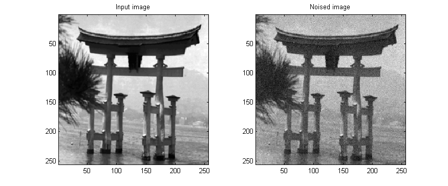
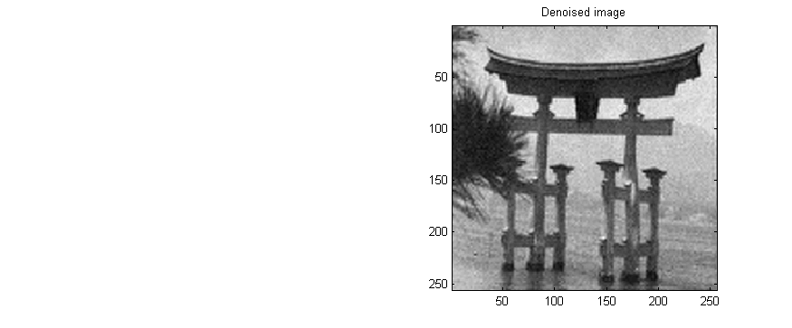

| FRACLAB Functions |
|
Performs the Multifractal Regularization of a 2D signal using a Multifractal pumping method and multiplying the wavelets coefficients by a number Xj in (0,1) constant by scales
REGX = wavereg2d(x,QMF)
REGX = wavereg2d(...,'Norm')
REGX = wavereg2d(...,'Propertyname',Propertyvalue)
REGX = wavereg2d(x,QMF) Performs the regularization, REGX, of the input signal x using a specific quadrature mirror filter, QMF.
REGX = wavereg2d(...,'Thresholding') Performs the regularization, REGX, using a specific normalization method. The supported Norms can be choosen from the list below :
| Specifier | Norm Type |
|---|---|
| 'L2' | L2 normalization (default) |
| 'kullback' | Kullback normalization |
H = wavereg2d(...,'Propertyname',Propertyvalue) Computes the denoised signal, REGX, applying the specified property settings. The property setting can be choosen from the list below :
| Property | Purpose |
|---|---|
| 'increase' |
The REGX is computed with a specific regularity increase, R. The parameter R
is a real number. If R is negative the signal is actually "noised". |
| 'level' |
The REGX is computed with a specific start level, L. The parameter L is a positive
integer in (1+log2(max(size(x)))/2,log2(max(size(x)))) that defines the start level where the computation begins. |
images_loc = which('wavereg2d.html');
x = imread(fullfile(fileparts(images_loc),'images_examples','Denoising','door.tif'));
x = ima2mat(x); b = randn(size(x)); xb = x + b/20;
QMF = MakeQMF('daubechies',14);
y = wavereg2d(xb,QMF,'increase',0.5,'level',7);
figure; subplot(1,2,1); imagesc(x); title('Input image'); axis image;
subplot(1,2,2); imagesc(xb); title('Noised image'); axis image;
colormap(gray);
figure; subplot(1,2,1); imagesc(x); title('Input image'); axis image;
subplot(1,2,2); imagesc(y); title('Denoised image'); axis image;
colormap(gray);


| |
wavereg1d | waveshrink1d | |